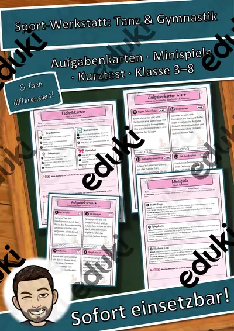
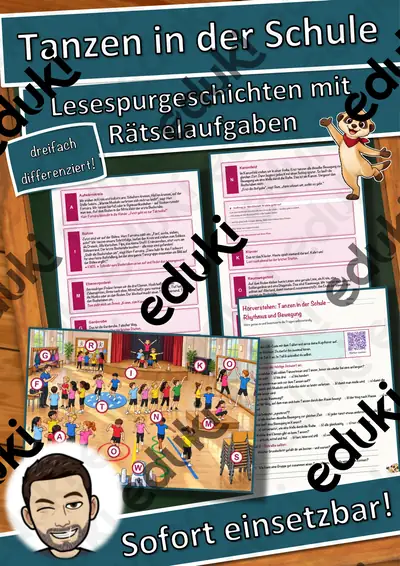

Lesespur: Das Musical: Singen, Spielen, Tanzen – Lesespurgeschichte mit Rätseln (Klasse 8)
Das Musical – Singen, Spielen, Tanzen – Lesespurgeschichte Musik (Klasse 8)Begib dich mit deiner Klasse auf eine spannende Lesespur hinter die Kulissen eines großen Musicaltheaters! Aurora und Kian dürfen mit ihrer Klasse dorthin, wo sonst nur das Team hinkommt: In der Plakatgalerie erfahren sie, wie das Musical am Broadway entstand und was es von der Oper unterscheidet, im Castingraum, warum Darsteller singen, tanzen und schauspielern können müssen, im Gesangsstudio lernen sie Opening, Ballade, Showstopper und Finale kennen. Im Tanzsaal zählen sie die Choreografie mit, im Bandraum und am Tonpult entdecken sie Live-Band und Headset-Mikrofone, im Kostümfundus und Maskenraum die Kunst der schnellen Verwandlung – und von der Seitenbühne aus erleben sie das große Finale. Ihr Scheinwerfer Spotli ist immer dabei. Am Ende jedes Abschnitts verrät ein Hinweis den nächsten Ort auf dem Theaterplan – nur wer genau liest, findet den Weg und sammelt alle geheimen Buchstaben zum Lösungswort.
Die perfekte Lesespur für den MUSIKUNTERRICHT der 8. Klasse – ideal als Einstieg in das Musical oder zur Vorbereitung eines Schulmusicals: Sie verbindet sinnentnehmendes Lesen mit Fachbegriffen und einem lebendigen Blick auf die vielen Berufe hinter einer Show. Das Material ist SOFORT EINSETZBAR und in DREI DIFFERENZIERUNGSSTUFEN (leicht ★ / mittel ★★ / schwer ★★★) angelegt.WICHTIG: Das komplette Material ist sowohl in FARBE als auch in SCHWARZ-WEISS enthalten – ideal zum Sparen von Druckkosten.DAS IST ENTHALTEN
- Lesespurgeschichte in 3 Niveaus (leicht, mittel, schwer)
- farbiger Theaterplan als Suchkarte
- Hörverstehen mit QR-Code zur MP3 (selbstständiges Hören mit Kopfhörern)
- vier Aufträge auf dem Weg: eine Zuordnung, ein Quiz, eine Rechenaufgabe und ein Steckbrief
- Rätselseite (Wörter-Suchsel + Fragen)
- Ausmalbild zum Thema (Ensemble beim Finale auf der Bühne)
- ausführliches Lösungsblatt für die Lehrkraft
- alles zusätzlich als komplette Schwarz-Weiß-VarianteSO GEHT DIE LESESPURDie Jugendlichen lesen ab START, finden im Text den nächsten Ort, suchen ihn auf dem Theaterplan und lesen bei dieser Station weiter. An jeder richtigen Station gibt es einen Buchstaben. Eingebaute Sackgassen (Kantine, Garderobe, Lastenaufzug, Produktionsbüro) sind keine Stationen und dienen der Selbstkontrolle. Am Ende werden die gesammelten Buchstaben umgestellt und ergeben ein geheimes Lösungswort. (Die Lösungen sind selbstverständlich nur im Lösungsblatt für die Lehrkraft enthalten.)INHALTLICHER SCHWERPUNKTDie Jugendlichen lernen das Musical als Verbindung von Gesang, Schauspiel und Tanz kennen, beschreiben Unterschiede zur Oper, unterscheiden Songtypen und erfahren, welche Aufgaben Casting, Choreografie, Band, Tontechnik, Kostüm, Maske und Inspizienz in einer Produktion übernehmen.ABGEDECKTER LEHRPLAN (Klasse 8, Musik)
- Musik (LehrplanPLUS Bayern) – Jahrgangsstufe 8 „Musik und Bühne – Musical“: Merkmale des Musicals kennen, mit der Oper vergleichen, Songtypen unterscheiden und Aufgaben der Beteiligten erläutern.
- Deutsch – Lesen und mit Texten umgehen: Sachinformationen gezielt entnehmen; Zuhören: einem Sachhörtext konzentriert folgen (Hörverstehen mit MP3).
- Mathematik – Multiplikation, Rechnen mit natürlichen Zahlen.
- Fächerübergreifend / Kompetenzen: Deutsch/Theater, Sport (Tanz), Berufsorientierung Bühne und Technik, genaues Lesen und Prüfen, kreatives Gestalten (Ausmalbild).
Geeignet für Freiarbeit, Stationenlernen, Vertretungsstunden, Wochenplan, Projekttage und Distanzunterricht. Klassenstufe 8.
Ähnliche Materialien

Musical Lückentext mit Wortspeicher Hörverstehen und Suchsel

Oper Lückentext mit Wortspeicher Hörverstehen und Suchsel

Tanz Lückentext mit Wortspeicher Hörverstehen und Suchsel

Lesespur: Die Stimme und der Chor: wie wir singen – Lesespurgeschichte mit Rätseln (Klasse 6)

Lesespur: Kinderlieder und Spiellieder: Singen macht Spaß – Lesespurgeschichte mit Rätseln (Klasse 1)

Sport-Werkstatt Tanz & Gymnastik: Aufgabenkarten in 3 Stufen & Kurztest (Klasse 3–8)

Lesespur: Die Zaubershow: Hinter den Kulissen der Magie – Lesespurgeschichte mit Rätseln (Klasse 5)
